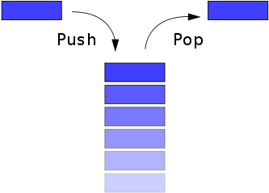
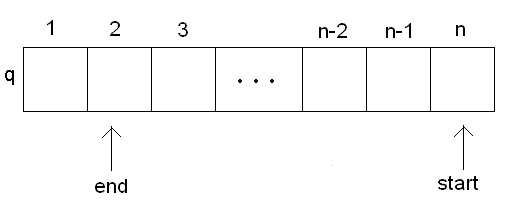

Структуры данных: стеки и очереди
Записи и оператор with
Записи используются для создания своих типов данных
{ Обьявление записи - тип "Точка" }
type
TPoint = Record
x,y : double;
end;
{ Функция, вычисляющая расстояние между точками }
function dist( A,B : TPoint ):double;
begin
dist := sqrt( (A.x - B.x)*(A.x - B.x) + (A.y - B.y)*(A.y - B.y) );
end;
{ Использование записей }
var A,B : TPoint;
begin
{ Инициализируем координаты точек }
A.x := 1; A.y := 2;
B.x := 10; B.y := 11;
writeln( dist(A,B) );
end.
Использование with:
{ Обьявление записи - тип "Персонаж в игре" }
type
TUnit = Record
x,y : integer; { Координаты клетки где стоит персонаж }
name : string; { Имя персонажа }
end;
var Unit1 : TUnit;
{ Инициализация без with }
Unit1.x := 2;
Unit1.y := 3;
Unit1.name := 'SUPER-HERO';
{ Инициализация с with }
with Unit1 do begin
x := 2;
y := 3;
name := 'SUPER-HERO';
end;
Реализация Стека и Очереди на базе массива
Стек (англ. stack — стопка) — структура данных с методом доступа к элементам LIFO (англ. Last In — First Out, «последним пришёл — первым вышел»). Чаще всего принцип работы стека сравнивают со стопкой тарелок: чтобы взять вторую сверху, нужно снять верхнюю.

const StackSize = 10000; { Размер стека (сколько в него можно положить элементов) }
{ === Хранение стека === }
var
Stack : array [1..StackSize] of Integer; { Массив для хранения стека }
StackTop : Integer = 0; { Вершина стека - индекс в массиве Stack }
{ === Операции со стеком === }
{ Стек пуст? }
function isEmpty : Boolean;
begin
isEmpty := StackTop = 0;
end;
{ Положить значение на вершину стека }
procedure Push( Value : Integer );
begin
assert( StackTop < StackSize, 'Стек полон! Больше положить в него нельзя!');
Inc(StackTop);
Stack[StackTop] := Value;
end;
{ Забрать значение с вершины стека }
function Pop : Integer;
begin
assert( not isEmpty, 'Нельзя извлечь элемент, потому что стек пуст!');
Pop := Stack[StackTop];
Dec( StackTop );
end;
{ === Тестирование работы стека === }
begin
Writeln(isEmpty); { Выводит "TRUE" - стек пуст }
Push(2); { В стеке: 2 }
Writeln(isEmpty); { Выводит "FALSE" - стек не пуст }
Push(5); { В стеке: 2, 5 }
Writeln(Pop); { Выводит "5", в стеке: 2 }
Writeln(Pop); { Выводит "2", в стеке пусто }
end.
Очередь — структура данных с дисциплиной доступа к элементам «первый пришёл — первый вышел» (FIFO, First In — First Out). Добавление элемента (принято обозначать словом enqueue — поставить в очередь) возможно лишь в конец очереди, выборка — только из начала очереди (что принято называть словом dequeue — убрать из очереди), при этом выбранный элемент из очереди удаляется.

const QSize = 10000; { Размер очереди (сколько в неё можно положить элементов) }
var
Q : array [1..QSize] of Integer; { Массив для хранения очереди }
Q_Start : Integer = 1; { Указывает на голову очереди }
Q_End : Integer = 1; { Указывает на элемент, который заполнится, когда в очередь войдёт новый элемент }
{ = Операции с очередью = }
{ Очередь пуста? }
function isEmpty : Boolean;
begin
isEmpty := Q_Start = Q_End;
end;
{ Положить значение в конец очереди }
procedure Put( Value : Integer );
begin
Q[Q_End] := Value;
Dec(Q_End);
{ Поддержка закольцованности очереди }
if Q_End < 1 then Q_End := QSize;
end;
{ Забрать значение с начала очереди }
function Get : Integer;
begin
assert( not isEmpty, 'В очереди ничего нет!');
Get := Q[Q_Start];
Dec(Q_Start);
{ Поддержка закольцованности очереди }
if Q_Start < 1 then Q_Start := QSize;
end;
begin
Writeln(isEmpty); { Выводит "TRUE" - очередь пуста }
Put(2); { В очереди: 2 }
Writeln(isEmpty); { Выводит "FALSE" - очередь не пуста }
Put(5); { В очереди: 5, 2 }
Writeln(Get); { Выводит "2", в очереди: 5 }
Writeln(Get); { Выводит "5", в очереди пусто }
end.
Реализация на C/C++
Реализация Стека
#include <iostream>
#include <assert.h>
using namespace std;
// Определение класса Стек
// Шаблон с двумя параметрами:
// T - тип элемента (например: int, char, char*)
// size - размер стека (целое число)
template <typename T,int size>
class Stack{
T data[size]; // Данные стека
int count; // Количество элементов в стеке
// count указывает на ячейку после последнего элемента в стеке
// Например, если count = 1, то последний элемент это data[0]
public:
// Конструктор
Stack(){ count = 0; };
// Стек пуст?
bool isEmpty(){
return count <= 0;
};
// Стек полон?
bool isFull(){
return count >= size;
};
// Добавить на вершину стека
void push(T value){
assert(!isFull()); // Можно добавить только если стек ещё не полон
data[count++] = value; // Записываем значение в массив и сдвигаем счётчик вправо
}
// Снять с вершины стека
T pop(){
assert(!isEmpty()); // Можно снять только если стек не пуст
return data[--count]; // Уменьшаем счётчик (сдвигаем влево) и возвращаем значение
}
};
// Основная программа - тестирование стека
int main() {
Stack<int,5> s; // Создаём пример стека
assert(s.isEmpty()); // Сейчас стек должен быть пустым
s.push(5); // Добавляем один элемент
assert(!s.isEmpty());
assert(s.pop() == 5);
assert(s.isEmpty());
assert(!s.isFull());
s.push(1); s.push(2); s.push(3);
s.push(4); assert(!s.isFull()); // Стек ещё не полон после добавления четвёртого элемента
s.push(5); assert(s.isFull());
Stack<char,2> cs; // Заводим другой пример стека - с символами в качестве элементов
cs.push('a');
return 0;
}
Реализация очереди (циклической очереди)
#include <iostream>
#include <assert.h>
using namespace std;
// Определение класса Очередь
// Шаблон с двумя параметрами:
// T - тип элемента (например: int, char, char*)
// size - размер очереди (целое число)
template <typename T,int size>
class Queue{
T data[size]; // Данные очереди
int head; // Голова очереди (первый элемент)
int tail; // Хвост очереди (последний элемент)
public:
// Конструктор
Queue(){ head = -1; tail = 0; };
// Очередь пуста?
bool isEmpty(){
return head < tail;
};
// Очередь полна?
bool isFull(){
return len() >= size;
};
// Текущая длина очереди
int len(){
return head-tail+1;
};
// Добавить в начало очереди
void put(T value){
assert(!isFull()); // Можно добавить только если очередь не полна
++head; // Сдвигаем голову вправо
data[head % size] = value; // Записываем в ячейку с номером по модулю
// -----------------------------------------
// | 0 | 1 | 2 | 3 | 4 | 5 | 6 | 7 | 8 | 9 |
// -----------------------------------------
// Количество ячеек - 10, максимальный размер очереди - 10
// Куда должен пойти 10-ый элемент? На 0-ую позицию
// Куда должен пойти 20-ый элемент? Тоже на 0-ую позицию
// Цикличность очереди обепечивается тем, что мы индекс элемента всегда берём по модулю максимального размера очереди
}
// Взять из конца очереди
T get(){
assert(!isEmpty()); // Можно снять только если очередь не полна
return data[tail++ % size]; // Забираем значение из хвоста и двигаем хвост вправо
}
};
// Основная программа - тестирование стека
int main() {
Queue<int,5> s; // Создаём пример стека
assert(s.isEmpty()); // Сейчас очередь должна быть пуста
s.put(5); // Добавляем один элемент
assert(!s.isEmpty());
assert(s.get() == 5);
assert(s.isEmpty());
assert(!s.isFull());
s.put(1); s.put(2); s.put(3);
s.put(4); assert(!s.isFull());
s.put(5); assert(s.isFull());
return 0;
}